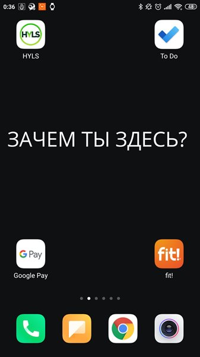

У
меня из всего пройденного материала не получилось только одно: никак не
могу отказаться от смартфона в туалете.... единственное, чего я смог
достигнуть это ограничить себя 10 минутами..... даже и подумать не мог,
что отказаться от телефона в туалете мне будет сложнее, чем бросить
курить
09:25
Ответить
0
+
−
AlVOrlov21
Удалился
из соцсетей давно. Удалил браузер и почту на телефоне - на первый
взгляд страшно, но по факту всегда можно подождать и найти на
компьютере. Установил пароль на скринтайм, которого не знаю, запретил
установку приложений и встроенный браузер. Оставил мессенджеры, банк,
карты, список задач и т.д. Живу так уже давно и очень доволен. Следующий
этап - кнопочный телефон :)
7 Фев. 20:34
Ответить
0
+
−
Akman
Часто
проверяя что-то в телефоне по работе могу увлечься соцсетями. Удалил
все приложения с главных экранов. Теперь их можно найти только через
поиск. Надеюсь, это поможет. Удалять не стал,
Отредактирован
7 Фев. 18:10
Ответить
+1
+
−
Allerborn_Ivan
1.
Отписался от не нужной инфы и не полезного контента - типа юмор и пр.
За счёт этого лента новостей стла очень короткой и со временем желание
проверять её стало кратно меньше. 2. Проложил сложный маршрут к соц
сетям на мобилке. 3. Пришел к выводу что на телефоне они не столь
необходимы. В ближайшее время буду менять комп и оставлю соц сети только
там. А его я редко юзаю. Освобождает много времени. Спасибо!
Отредактирован
7 Фев. 18:04
Ответить
0
+
−
amerkel
Не
смогла прям удалить приложения соц. сетей, т.к. периодически ими
пользуюсь всё же. Но собрала и забросила их все в далёкую папку, чтобы
минимизировать шанс "случайного залипания" (а такое случалось).
Посмотрим, как пойдёт :)
7 Фев. 00:54
Ответить
+1
+
−
Viking
Всегда
считала, что мало юзаю соц.сети. но предложение удалить с телефона и
пользоваться только с компа меня прям ввело в тупик. Отложила решение
этого вопроса до завтра 😒🤔
6 Фев. 21:33
Ответить
0
+
−
Baurzhan
Бывает залипание в Инстаграм особенно. Отвлекаюсь от основных задач на мелкие при виде новых сообщений.
6 Фев. 05:19
Ответить
0
+
−
Maracuja
редко
залипаю в соц.сетях. Обычно самое длинное залипание длится 5-10 мин,
это бывает нечасто. Могу заглядывать в инстаграм, но так как алгоритм
предлагает мне всё время 4-5 одних и тех же профилей, их просмотр
занимает минуты 2. И это не каждый день. Со временем наверное буду
проводить больше времени, так как планирую использовать инстаграм в
проф. целях.
5 Фев. 15:51
Ответить
0
+
−
TOM_C
Давно
использую два телефона, смарт и кнопка. Социальные сети и прочие
интернет приложения настроил на смартфоне, затем достал симку и вставил в
кнопочный телефон, так что смартфон может работать только через WiFi.
Против рекламы ничего не имею против, если она мне необходима ей
пользуюсь (удобно если тебе, что-то нужно найти в интернете ввел запрос,
и записывать в задачи не надо - интернет рекламой подскажет твои дела).
Приложения соцсетей давно набил в папки. Если мне звонят по рекламе и у
меня есть время, жду пока поговорит робот, дождавшись оператора веду
диалог и направляю разговор в нужное мне русло, своего рода тренировка
психики, иногда получается поржать. Некоторые операторы нервничают,
спрашивают зачем я взял трубку. Умысел один поприкалываться не
раздражаясь и забрать их ресурс времени и денег. Особенно люблю
разводить мошенников, наслаждаюсь когда в конце диалога идет отборный
мат с другой стороны - я чувствую такое наслаждение от психологической
победы - я герой - я человек - я могу противостоять - и т.д.
4 Фев. 09:21
Ответить
0
+
−
OllyOlly
Ещё
в первом спринте вывела виджет с задачами на первый экран, там как раз
три с половиной задачи влезает) а под ним приложеньки с идеями и
проектами. А вот соцсети рука не поднимается удалять. На экране точно
останется вотсап, там мой Диетолог и тревожная мама. Телеграм, инстаграм
и вк спрячу. Десктоп у меня только на работе, а на работе я убираю
телефон. Перед сном и во время еды тоже без смартфона. Получается, нет
времени залипнуть х) Посмотрю к концу недели, сколько времени я стала
проводить в соцсетях, и если больше часа, то удалю, что поделать.
4 Фев. 05:35
Ответить
+3
+
−
larsbiz
При проверке времени я проверяю время)))) Из соцсетей у меня только ВК, в который я никогда не захожу)))
3 Фев. 20:49
Ответить
0
+
−
amakuhin
Причесал
первый экран смартфона. Оставил только то, что важно. Обои с надписью
уже несколько лет ношу - сначала производили впечатление на меня, сейчас
- только на новых знакомых, которые удивляются кто дерзости, кто
лаконичности обоев, а кто-то отмечает, что обои заставляют задуматься о
том, зачем действительно заглядывать в смартфон. Предложение к
участникам марафона - давайте создадим серию таких обойков, которые
можно будет менять время от времени, чтобы не привыкать к одному и тому
же и постоянно быть в тонусе
Отредактирован
3 Фев. 18:40

Ответить
+6
+
−
Viatcheslav
Спасибо
за материал! Инстаграм я снёс ещё весной во время 1-го ковида. Фейсбук
отказался удаляться, поэтому я его задвинул вглубь телефона. Заходил
туда за полгода раза 3. В последнее время сильно залипал в Дзене.
Сегодня утром распределил приложения по папкам и убрал браузер с первой
страницы рабочего стола. Методика работает прекрасно! В Дзен сегодня не
заходил. Наблюдаю за собой 'ломку', но лёгкую. Палец сам тянется к
браузеру, но его на прежнем месте не находит. А искать браузер в
папочках уже лень)
3 Фев. 16:51
Ответить
+3
+
−
ReshetnikovAnton
Очередной
интересный материал, спасибо! Приложения давно разложены по папкам, но
теперь задумался над тем, чтобы немного изменить структуру. Пока
интересно одно: если в мессенджерах читать сообщения и не отвечать
сразу, то стоит заводить задачу вроде "Ответить Максиму в телеграме"?
Пока не могу себе представить, как всё устроить лучшим образом. /// Как часто при проверке времени вы проваливаетесь в беспамятство и блуждаете в соц. сетях? --- Иногда бывает, но не слишком часто.
Какие соц. сети и приложения вы точно не станете удалять? Почему? ---
Соцсети удалил полностью буквально несколько дней назад, возвращать,
наверно, не собираюсь, хотя есть соблазн сделать это, но обложиться
всякими настройками наподобие выключенных уведомлений, т.к. через
браузер всё-таки совсем печально тем же инстаграмом пользоваться.
Удалять не буду только служебные (в широком понимании) и полезные
приложения: карты, изучение языков и т.д.
3 Фев. 14:30
Ответить
0
+
−
JuliaShu
Из этого дня самое для меня полезное: спрятать залипательные приложения и приложение "не бери трубку".
2 Фев. 21:58
Ответить
0
+
−
JuliaShu
Какие соц. сети и приложения вы точно не станете удалять? Почему? Инстаграм, у меня там подработка, веду чужой аккаунт.
2 Фев. 21:48
Ответить
0
+
−
JuliaShu
Как часто при проверке времени вы проваливаетесь в беспамятство и блуждаете в соц. сетях? Не часто, но бывает.
2 Фев. 21:47
Ответить
0
+
−
Mila_Y
Добавила
виджет от таскменеджера на главный экран, все по феншую, т. е. по
Максиму и теперь включаю и задаюсь вопросом, а мой ли это смартфон))
2 Фев. 16:31
Ответить
+2
+
−
Mila_Y
Все
сложила по папкам и у меня простор, выбрала только важные приложения.
Важные для продуктивной жизни. Чувствую себя лёгкой, как после уборки
или стрижки и все благодаря марафону. Параллельно сползла с иглы игры,
надеюсь навсегда. Спасибо
2 Фев. 16:09
Ответить
+1
+
−
Stri
Как
часто при проверке времени вы проваливаетесь в беспамятство и блуждаете
в соц. сетях? время если я в пути смотрю в телефоне "кирпич с кнопками"
зарядки на долго хватает и ничего лишнего нет, так же смс с банка и
пароли приходят на него , по-моему сейчас такой телефон вряд ли будут
взламывать, ссылки на нем не откроются у меня ввиду отсутствия такого
функционала. И время обычно смотрю на ПК когда на работе. А вот заходя
зачем ни будь в планшет все равно отвлекался на вк. сегодня удалил)
Какие
соц. сети и приложения вы точно не станете удалять? Почему? удалил было
две, обе и удалил. Сообщения там пишут не срочные в соц. сетях бизнес
не строю только планирую и даже тогда не буду ставить потому что лучше
сесть спокойно за ПК когда это себе планируешь и нормально везде
ответить если нужно.
2 Фев. 05:06
Ответить
+1
+
−
Kseniya21
Все
уведомления отключаю сразу. Из соц сетей остался ФБ, но тоже очень мало
там бываю. А вот ват сап, можно сказать что практически не закрывается,
работа или обучение.
2 Фев. 04:12
Ответить
+1
+
−
razinkov
Я
умный - я понимаю, что во внешнем мире гораздо больше притягательных
форм, чем у меня ума. Из-за чего эти формы своим количеством притягивают
мой ум, как планета притягивает мое тело. Увлеченный ум растрачивает на
них энергию и не может оторваться, как тело не может оторваться от
земли. Спасение ума я вижу в отречением от всего, без чего могу
обойтись. Без соцсетей уже 5 лет живу и здравствую.
1 Фев. 19:51
Ответить
+2
+
−
Ksilol
Сменила
телефон, и чистка произошла естественным путем. Не могу удалить ВК, т.
к. использую его по работе. Зато не стала переустанавливать ФБ - не то
чтобы я в нем залипаю, скорее наоборот, но вот его бесконечные
пуш-уведомления, постоянно выскакивающие (и это при том, что вроде
поотключала их везде и всюду!) отвлекают и дико раздражают. Инсту
когда-то заводила ради эстетического созерцания, нынче там одна реклама -
раздражает, захожу раз в день, чтобы быстренько глянуть новости
пары-тройки людей. Пинтерест - раз или два в неделю, быстро надоедает.
Вот и все. Не в этом беда. Проблема в том, что меня могут затянуть
"неисповедимые пути гиперссылок" - начнешь что-то читать, потом
понадобится что-то уточнить, по пути обнаружишь какой-то интересный
факт, полезешь узнать об этом побольше... вот как это ограничить - не
знаю. Здесь советы эти не очень работают. И Дзен затягивает временами,
да.
1 Фев. 19:17
Ответить
0
+
−
RamonaK
Ооооой,
статья, разделившая мой мир на до и после. Благодарю! Почему мой ум не
настолько пытлив, чтобы самой найти какие-то решения) Я вынесла на
первый экран после блокировки только виджеты главные, удалила все
прилажухи залипательные внутрь меню. Настроила приложения, чтоб не было
красных этих уродских кружков, они мне ужасно трепали нервы, но я даже
не догадалась покапаться в настройках! (( Приложения соцсетей не удаляю,
так как моя работа связана сильно с соцсетями, но в этом плюс - мне
уже не по работе не так интересно там сидеть) Настроила уведомления -
нахрен все отключила. Сижу я сейчас. И мне так хорошоооо. Просто как
будто я нашла то, что искала всю жизнь))))
1 Фев. 16:48
Ответить
+3
+
−
OlkaLelka
Настроила инсту, чтобы там было очень мало подписок - друзья и только нужные организации.
1 Фев. 13:54
Ответить
0
+
−
GorillasKing
Ранее
наткнулся на видео Максима из этого материала, прислушался, применил с
поправкой на своих тараканов. В моём случае достаточно было закинуть
ярлычки инстаграма и фейсбука в отдельную папку на втором экране
смартфона, чтобы не включать их по мере необходимости, уведомления от
ненужных софтин были выключены ранее
Отредактирован
1 Фев. 09:58
Ответить
+1
+
−
Stepan81
У меня нет зависимости от соц сетей, а вот яндекс дщен отбирает вагон времени
1 Фев. 03:04
Ответить
0
+
−
Sirin
Пошла удалять. Радикально, но надо)
31 Янв. 22:06
Ответить
+1
+
−
Amazzzonka
Ой,
красные уведомлялочки - это какой-то бич. Я разобралась, как это все
поотключать в мессенджерах, но вот что делать с обновлениями, например,
или с почтой.. ты видишь этот красный кружочек и он тебе просто выедает
глаза и хочется от него избавиться :) ФБ выношу с телефона сразу же (это
касается тех случаев, когда он предустановлен в прошивке), специально
не ставлю мессенджер. Оставила инсту больше для вдохновения, но
заметила, что после просмотра инсты бывает ухудшается настроение (судя
по инсте, среди моих друзей и знакомых работаю только я, остальные тусят
где-нибудь в Египтах как минимум)))), поэтому туда тоже уже редко
захожу :)
30 Янв. 23:54
Ответить
+2
+
−
KIRILL007
То
чувство когда ещё месяц назад все это сделал. Ребята, удалите ютуб и
инсту. Это абсолютно бесполезные вещи. А если что то действительно нужно
будет посмотреть есть веб версии. В них не задипнешь зато. Они
неудобные
30 Янв. 21:12
Ответить
+1
+
−
Igor_Batrakov
Не
часто, но бывает, берешь экран, что бы посмотреть что-то нужное
сейчас, а там уведомление о сообщении в чатике, отвечаешь, за что-то
другое цепляешься, через 15 минут начинаешь осознавать, что что-то же
хотел нужное там посмотреть... Сначала отключил вообще все
уведомления и кружки с циферками, оставил только для звонков. Рабочие
инструменты и так регулярно проверяю в рабочее время с компа. Сейчас
попробовал поставить на главный только виджет со списком дел и
минимальный набор необходимых приложений, посмотрим как приживется. Социалками
со смартфона почти не пользовался, я вообще ими редко пользуюсь, только
для утилитарных нужд, типа когда авторизация через facebook или надо
что-то в какой-то группе в VK найти. Решил удалить, открыл инсту в
первый раз за полгода наверное, посмотреть что там, начал читать
резонансный пост знакомого, потом комменты, прошло 5 мин, закрыл и все
удалил нафиг)
30 Янв. 07:24
Ответить
+1
+
−
Tomasu
Из
соцсетей у меня только контакт. На телефоне приложения нет. Захожу в
него с компа только когда на почту придет уведомление о новом сообщении и
то не от каждого пользователя. В последний раз заходил в него в
середине декабря. Все общение в 99% в мессенджерах и звонки.
30 Янв. 03:32
Ответить
0
+
−
lel
Удаление
для меня звучит как перебор) Тем более что вот думаю в Инстаграм
завести блог, считай рабочий инструмент :) Но отключила все уведомления,
кроме нескольких людей в Telegram и Whatsapp, а в Slack (рабочий
мессенджер) настроила отключение уведомлений в нерабочие часы. Ну и
хороший совет про то, чтобы скрыть все в папочки, чтобы не мозолило
глаза - самое заманчивое поскрывала.
29 Янв. 20:42
Ответить
+1
+
−
KIRILL007
lel, Пока думаешь завести ещё удали. Ты же ещё не завел
30 Янв. 21:11
1 ответ
stalkerboy
Не удалю некоторые приложения по тому что там я саморазвиваюсь и использую их только для блага.
29 Янв. 16:10
Ответить
+1
+
−
Azatt
Соцсети
в смартфоне не использую. Если залипаю, то в основном всякие новости
читаю в браузере. Еще как понял недавно много внимания занимает
прослушивание музыки на смартфоне - видимо я аудиал. Убрал музыкальные
приложения подальше.
29 Янв. 15:27
Ответить
+1
+
−
Anni1693
Дельная
вещь, я таким образом избавилась от зависимости листать ленту в вк уже
наверно как пол года назад. Просто перенесла приложение на соседнюю
страничку и палец автоматом не летел нажать на его иконку. Теперь самым
залипательным и единственным остался Инстаграм, но в нем я пытаюсь вести
активный блог пока что не готова скинуть его с глаз долой. Но все
убрала его на страничку с приложениями связанными с блогом и сразу
заметила что стало круче. Теперь думаю буду заходить буду когда
действительно нужно будет что то сделать а не бесцельно каждые 5 минут
обновлять ленту «от скуки»
Отредактирован
29 Янв. 03:13
Ответить
+1
+
−
AntonV
Как часто при проверке времени вы проваливаетесь в беспамятство и блуждаете в соц. сетях? Уже давно такого не помню. Из такого похожего могу отметить, что бывает раз в пару недель могу блуждать по статьям на vc.ru, но и то уже стараюсь это перевести на осмысленное чтение, например сохраняю статьи, и читаю в дороге или в отведенное время.
Какие соц. сети и приложения вы точно не станете удалять? Почему? Телеграм
считается соц сетю? :) его не удалю, это мое окно в мир, читаю для себя
(новости, статьи), и по работе, общение занимает из этого меньше всего
времени.
29 Янв. 00:43
Ответить
0
+
−
Shokolad Zatoka
Совет
отключить интернет, просто отличный!!! Спасибо, не подумала про такое.
Действительно, отключил и все, вне зоны доступа. Кому сильно надо, тот
позвонит.
28 Янв. 23:39
Ответить
0
+
−
AndreyArapov
Идея
со списком дел на первом экране очень впечатлила. Принял в виде
вакцины. Все остальные приложения уехали на второй экран. Уже хорошо.
Жалко, что на iOS у малого кол-ва приложений есть нормальные виджеты. В мессенджерах замьютил сообщения из групп.
28 Янв. 23:04
Ответить
0
+
−
Vladblad
Тоже
заменил себе везде главные экраны на виджеты. И тут вылез косяк
сингулярити - у нее нет норм виджета по айос. Лучший виджет как ни
странно у стандартного приложения ios которое за эи годы неожиданно
развилось в очень мощный инструмент, даже подумываю на него перейти с
сингулярити, так как он поплавнее работает местами. У меня к
сожалению соцсети это история не про залипание, а история про тяжкий
труд, так как там сосредоточен личный бренд и вообще весь почти
маркетинг компании. Меня уже трясет от инстаграма, но приходится в него
заходить и работать)
Отредактирован
28 Янв. 18:15
Ответить
0
+
−
AllaRadonets
После
просмотра урока удалила приложение ВК. Туда захожу чаще в компе. В ФБ
не захожу со смартфона и на компьютере стараюсь не заходить, потому что
там проваливаюсь в бездну( На смартфоне могу залипнуть в инстаграме.
Но его не могу удалить, потому что необходимо развивать мой бренд как
автора программ по реализации стратегических целей для бизнес-команд.
Отредактирован
28 Янв. 17:39
Ответить
+1
+
−
OxanaKrechko
В
соцсетях не сижу. Иногда выкладываю фотки, в основном для себя. Раз в
месяц захожу в вк, про FB вообще забыла и так уже давно) Вчера прятала
телефон от себя, в итоге пропустила важное сообщение от врача(((
Уведомления отключены, телефон на беззвучном вообще. Приложения в общей
куче. Вот про виджет списка дел - действительно полезная вещь, заберу
себе!
28 Янв. 08:29
Ответить
+1
+
−
Sakish
Соцсети
не захожу, кроме Инстаграм, там удалила подписки и уже нет возможностей
залипать, просматривая всех. Уведомления все отключила, мне нравится
теперь без красных точек. Предупредила своих, вечноконтактируемых, что с
12 до 14 меня нет в сети. Отдаю сыну на 2 часа свой телефон и оплачиваю
штраф, если беру. Два раза просыпалась раньше будильника, теперь и его
хочу отключить.
27 Янв. 17:40
Ответить
+2
+
−
port56
Принципиально
не устанавливаю почтовые приложения, как для личной почты так и для
рабочей. В рабочие часы, почта и с компьютера доступна, зачем мне лишний
раз на телефоне видеть что-то?
27 Янв. 14:07
Ответить
+2
+
−
Karamzin
Уже
давно пользуюсь цифровым благополучием у себя в Андроиде. Там настроил
лимит посещаемости соц сетей на день. Если лимит превышается то
автоматически вылетает с приложения и не даёт заходить до следующих
суток. Таким образом перестал залипать в инсте, там лимит 5 минут в
день, хватает чисто отвечать на сообщения и всё
27 Янв. 12:25
Ответить
+2
+
−
tenguoni
Ооооо , про угрёбишные синенькие галочки в вацапе не знал, что их можно вырубить - выключаю нафиг сразу.
27 Янв. 12:09
Ответить
0
+
−
Vitaliidaybert
Последнее
время наблюдал залипание в инсте (вечером) решилось в проц. роботы со
сном, в телеграмм - здесь сложнее т.к. учеба в нескольких проектах ч.з.
этот ресурс + в осн. вся активность. Ещё what's app (отключил
уведомления, захожу редко) и you Tobe (чисто обучение, сейчас прилично
т.к. учусь) В итоге немногим ранее я отключил все уведомления, соц
сетей, менеджеров, перевел программы которые не использую во время
рабочего времени в спящий режим, поставил на постоянку режим чтения,
чтоб не так влияло на глаза, т.к. много времени с телефоном. В телеграмм
планирую чаты которые не использую при этом важны и от них идут
уведомления перевести в архив и просматривать в назначенное время и в
целом остальных входящих в определенный период времени.
27 Янв. 11:49
Ответить
0
+
−
tenguoni
Вижу
есть народ который в корне не согласен :) Нам предложили попробовать ) -
а после можно согласиться или не согласиться. Полностью исключать
конфеты, если сладкого хотите есть меньше не надо :) но держать их на
виду и на расстоянии вытянутой руки - крайне наразумно.
Отредактирован
27 Янв. 11:47
Ответить
+1
+
−
smita86
Точно
не удалю ВКонтакте и инстаграм. Эти соцсети мне нужны для работы, а у
компа я нахожусь не всегда. Одноклассники пожалуй удалю легко (не знаю
даже, там кто-то ещё сидит). Мессенджеров перенесу подальше от глаз, так
как телеграм иногда меня увлекает. Остальными приложениями пользуюсь
редко, неделями могу не заходить. Вот MToDo использую часто) кстати, я
установила на смартфоне лимит времени для посещения соцсетей (не больше
часа в день), помогает отодвинуть обезьяну и поставить у руля
рационального типа.
26 Янв. 15:10
Ответить
0
+
−
Арина
Недавно
по совету папы убрала самые залипабельные приложения (типо Тик ток) с
глаз долой, и это действительно работает. Туда же полетит сейчас вк,
хотя с этой соц.сетью я усилием воли справилась, и больше туда не хочу.
Захожу пару раз в месяц на 10 минут, чтобы посмотреть кто и что написал.
///
Как часто при проверке времени вы проваливаетесь в беспамятство и блуждаете в соц. сетях?
--- Иногда бывает, но не слишком часто.
Какие соц. сети и приложения вы точно не станете удалять? Почему?
--- Соцсети удалил полностью буквально несколько дней назад, возвращать, наверно, не собираюсь, хотя есть соблазн сделать это, но обложиться всякими настройками наподобие выключенных уведомлений, т.к. через браузер всё-таки совсем печально тем же инстаграмом пользоваться. Удалять не буду только служебные (в широком понимании) и полезные приложения: карты, изучение языков и т.д.
Какие соц. сети и приложения вы точно не станете удалять? Почему? удалил было две, обе и удалил. Сообщения там пишут не срочные в соц. сетях бизнес не строю только планирую и даже тогда не буду ставить потому что лучше сесть спокойно за ПК когда это себе планируешь и нормально везде ответить если нужно.
Сначала отключил вообще все уведомления и кружки с циферками, оставил только для звонков. Рабочие инструменты и так регулярно проверяю в рабочее время с компа. Сейчас попробовал поставить на главный только виджет со списком дел и минимальный набор необходимых приложений, посмотрим как приживется.
Социалками со смартфона почти не пользовался, я вообще ими редко пользуюсь, только для утилитарных нужд, типа когда авторизация через facebook или надо что-то в какой-то группе в VK найти. Решил удалить, открыл инсту в первый раз за полгода наверное, посмотреть что там, начал читать резонансный пост знакомого, потом комменты, прошло 5 мин, закрыл и все удалил нафиг)
Уже давно такого не помню. Из такого похожего могу отметить, что бывает раз в пару недель могу блуждать по статьям на vc.ru, но и то уже стараюсь это перевести на осмысленное чтение, например сохраняю статьи, и читаю в дороге или в отведенное время.
Какие соц. сети и приложения вы точно не станете удалять? Почему?
Телеграм считается соц сетю? :) его не удалю, это мое окно в мир, читаю для себя (новости, статьи), и по работе, общение занимает из этого меньше всего времени.
В мессенджерах замьютил сообщения из групп.
У меня к сожалению соцсети это история не про залипание, а история про тяжкий труд, так как там сосредоточен личный бренд и вообще весь почти маркетинг компании. Меня уже трясет от инстаграма, но приходится в него заходить и работать)